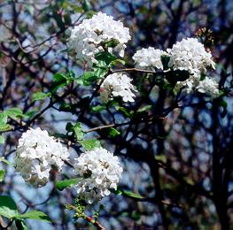
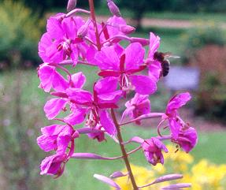
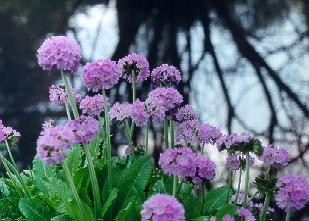
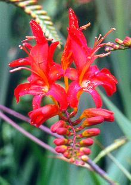
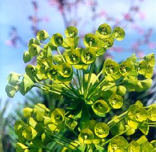
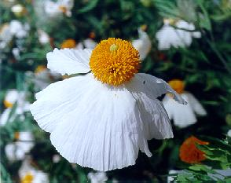
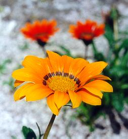
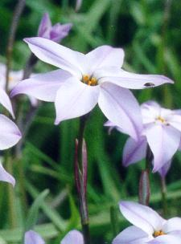
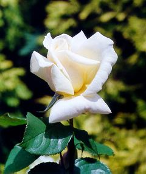
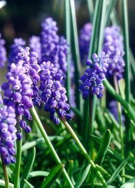

| У малесеньких садочках,
На молочних тих лугах, При дороз╕ ╕ на гор╕, По безкра╖х злих степах, По зелененьким листочкам, Бродять, але не мишата, ╤ не зв╕р╕, не зв╕рята, А ... маленьк╕╖ цв╕рята. |
 |
| То бжола кудись п╕дкине,
То метелик понесе. Тополиний пух полине, А на н╕м висить одне. Але в╕тер розбишака, Як дмухне в не т╕ поля! "То полинь", -- з╕тхне цв╕ряка, Знов почне усе з нуля. |
 |
| Кожне з них шука ноч╕вку,
Та не просто там кри╕вку, Чи землянку, чи халупку, Чи звичайну теплу грубку, А ╓дину ту дом╕вку, Найр╕дн╕шу мов ╕з пуху, Лиш вона трима на духу Ту злиденную мандр╕вку. |
 |
| Ось прийшли порядком
На незнану грядку. Не впускають ╖х кв╕тки, Повернуться другим боком Та поглянуть косим оком, На латан╕ сорочки, З часом вицв╕вш╕ нитки, Й замикають пелюстки. |
 |
| А на пол╕, при дороз╕
Велетеньський той будяк Винайняв вже пан Бридяк. Добродушний подорожник Захот╕в тих подорожн╕х, Поселити в себе в змоз╕ Та кв╕тки його маленьк╕ Нав╕ть цв╕рков╕ низеньк╕. |
 |
| Для Цав╕рни, ╖х цар╕вни,
Признача╓ться той д╕м, Що лишилася позаду, На пожарищ╕ в╕д саду Тих колишн╕х щастя дн╕в. Йдуть ╕ в╕рять, що колись В╕днайдуть ╖й тую владу, Той палац ╕ неба вись. |
 |
| З ними йде одна цв╕рина,
Та замурзана д╕вчина, Що тихенько ╖х вт╕ша╓, Ладну п╕сню засп╕ва╓. То розкаже ╖м билину Про червоную калину, Про маленький колосок, Той тоненький голосок. |
 |
| Весел╕ше разом йдеться,
Коли те д╕вча см╕╓ться. Для пот╕хи робить все, А ночами сльози л'╓, ╤ н╕хто того не зна╓, Що то ╖й найтяжче ╓: То перебрана Цав╕рна, Що народу свому в╕рна. |
 |
| "На нас кожного чека╓,
Мов та з╕рка в небесах. Шляху легкого не ма╓. Так передано в в╕ках: Той хто горя не п╕зна╓, Той н╕коли не знайде, Той н╕коли не вв╕йде. Йдемо браття попри все". |
 |
| Так Цав╕рна пов╕дала,
Промовчала лиш про те, Що в раю лише росте, Тая кв╕тка величава. ╤ по наш╕й, по земн╕й, По страдальницьк╕й земл╕, По стеблин╕, по р╕лл╕, Йде цв╕рявина батава... |
 |